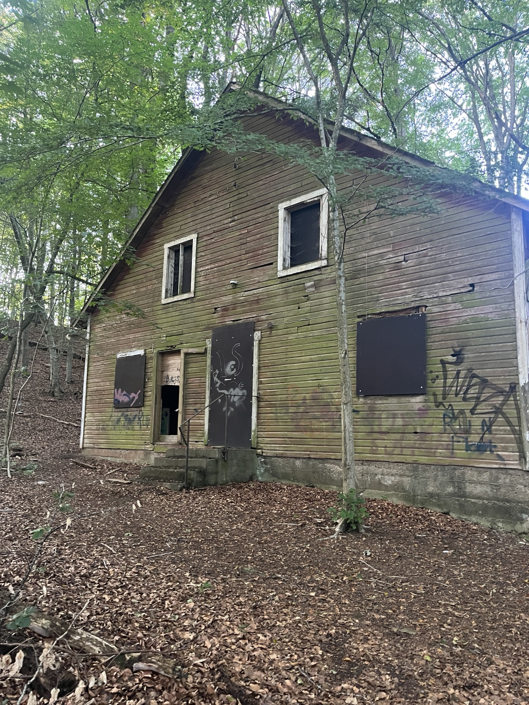

Platsens historia
Lyrans dal var en dans- och nöjesplats i skogsmiljö vid Bosarps jär. Platsen har beskrivits som en äldre dansbana/nöjeslokal som användes under mitten av 1900-talet och senare lämnades att förfalla. Uppgifterna om dess exakta verksamhetsår bör betraktas som ungefärliga tills de kan beläggas i lokalhistoriska källor.
Spökhistorier och rapporterade upplevelser
Lyrans dal var tidigare en dansplats där människor samlades och roade sig. I dag förknippas den övergivna byggnaden även med personliga berättelser från spökjakter. Det finns uppgifter om fotsteg, knackningar och viskningar, men upplevelserna är individuella vittnesmål och inte bevis för att platsen är hemsökt.
Hur hemsökt upplevs platsen?
Mycket starkt rapporterade spökupplevelser. Under en spökjakt berättade uppgiftslämnaren att både hen och en vän hörde svaga fotsteg från övervåningen och tre tydliga knackningar. Vännen uppfattade även viskningar. Spirit rods rörde sig och en EMF-mätare steg snabbt till omkring 100 mG, trots att elen uppgavs vara avstängd. Vännen beskrev dessutom en ledsen och obehaglig känsla redan när byggnaden blev synlig. Detta är återgivningar av vad deltagarna upplevde; mätarutslag och andra observationer kan ha flera möjliga förklaringar.
Besök och spökjakt
Byggnaden är förfallen och osäker att gå in i. Spökjakt inne i byggnaden ska därför betraktas som inte tillåten/rekommenderad utan uttryckligt tillstånd från mark- eller byggnadsägaren. Stanna på platser där allmänheten lagligen får vistas, gå inte in, klättra inte på konstruktionen och respektera avspärrningar och skyltar. Koordinater: 55°53′16.0″N 13°20′41.0″E.
Kunskapsläge: Flera konkreta personliga vittnesmål från en spökjakt har lämnats till webbplatsen. De är inte oberoende verifierade. Byggnaden är osäker att beträda.
← Till alla platser